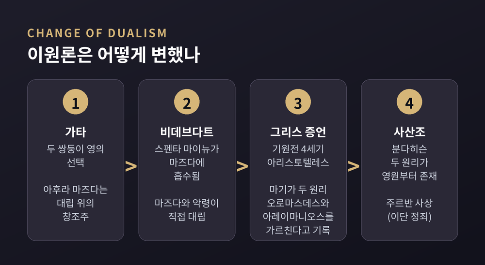
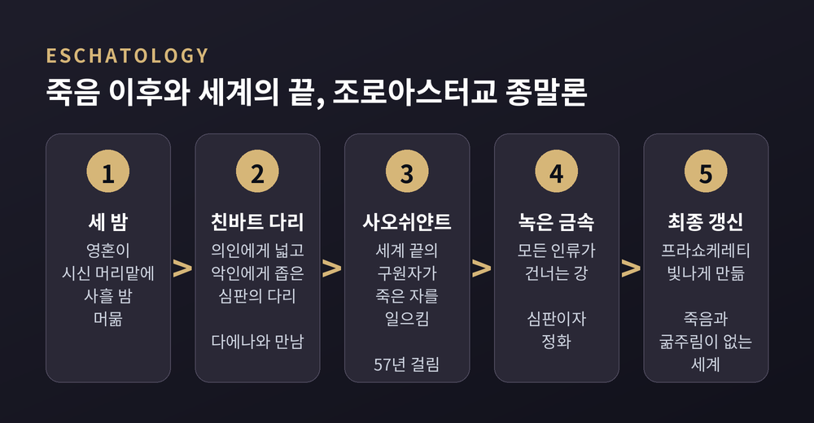
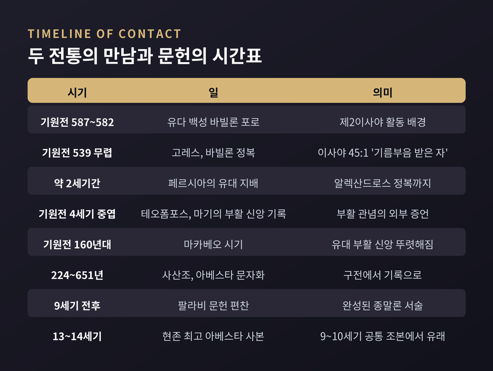

조로아스터교 선악 이원론, 아브라함 종교 영향설은 어디까지 맞을까
가타의 두 영에서 최후 심판까지, 지지와 회의를 나란히 읽기

이번 글에서는 조로아스터교의 선악 이원론을 비교종교학의 시선으로 정리해 보겠습니다. 이 종교가 유대교·기독교·이슬람에 영향을 주었다는 가설이 어디까지 근거가 있는지, 학계의 지지와 회의를 함께 살펴보려 합니다. 어느 신앙이 옳은지 판단하는 글은 아닙니다.
먼저 세 줄로 요약하면 이렇습니다.
세 줄 요약
- 조로아스터교 이원론의 원형은 가타의 '두 쌍둥이 영'입니다. 처음에는 두 영이 대립하고 아후라 마즈다는 그 위에 있었지만, 후대로 가며 아후라 마즈다와 앙그라 마이뉴의 직접 대결 구도로 바뀌었습니다.
- 최후 심판·부활·구원자 관념이 제2성전기 유대교에 영향을 주었다는 가설은 꽤 유력합니다. 페르시아 지배 이후 유대 문헌에 이런 관념이 비교적 갑자기 등장한다는 점이 핵심 근거입니다.
- 다만 '문헌 연대'라는 큰 약점이 있습니다. 조로아스터교 종말론의 완성된 모습은 서기 9세기 전후의 팔라비 문헌에서야 확인되고, 조로아스터의 생존 연대조차 수백 년 폭으로 갈립니다.
조로아스터는 언제 사람인가 — 출발점부터 흔들린다
영향설을 따지려면 먼저 누가 먼저인지를 알아야 합니다. 그런데 그 출발점부터 불확실합니다.
이란학의 표준 백과인 『이란 백과사전(Encyclopaedia Iranica)』은 조로아스터(자라투스트라)의 연대 문제를 "조로아스터 연구의 오랜 곤혹거리"라고 부릅니다. 합의에 가까운 것이 있다면 기원전 1000년 무렵, 앞뒤로 한 세기 정도라는 견해입니다. 하지만 권위 있는 학자들이 내놓은 연대는 기원전 1750년경부터 기원전 6세기경까지 벌어져 있습니다.
입장은 크게 둘로 나뉩니다.
- 이른 연대: 메리 보이스는 기원전 1200년경 또는 그 이전을 주장했습니다. 가타의 언어가 인도 베다와 가깝고, 동부 이란의 언어라는 점이 배경입니다.
- 늦은 연대: 팔라비 전승의 "알렉산드로스 이전 258년"을 따르면 기원전 7~6세기가 됩니다. 게르셰비치는 이 연대를 다시 옹호했고, 뇰리도 입장을 바꿔 이쪽을 지지했습니다.
반론도 있습니다. 보이스는 이 '258년'이 셀레우코스 기원(기원전 312/311년)이 생긴 뒤 계산된 숫자일 가능성이 높다는 연구를 인용합니다. 그렇다면 전통 연대를 역사적 근거로 쓰기 어렵다는 것입니다.
백과의 결론은 짧습니다. 논쟁은 전혀 결판나지 않았습니다.
가타의 두 쌍둥이 영 — 이원론의 원형
아베스타 가운데 조로아스터 본인의 작품으로 인정되는 것은 찬가 '가타(Gāthās)'뿐입니다. 브리태니커에 따르면 가타는 나머지 아베스타와 다른 고대 방언으로 쓰였고, 제의서 『야스나』 안에 끼워진 채 전해집니다.
이원론의 가장 유명한 대목은 야스나 30장입니다. 텍사스대 언어연구센터의 번역을 바탕으로 요지를 옮기면 이렇습니다.
두 원초적 영이 있으니, 꿈을 통해 드러난 쌍둥이다.
생각과 말과 행위에서 하나는 더 낫고, 하나는 나쁘다.
선한 이는 둘 사이에서 바르게 고르고, 악한 이는 그렇지 않다.
이어지는 구절에서 거짓을 따르는 영은 가장 악한 일을 택하고, 은혜로운 영(스펜타 마이뉴)은 진리(아샤)를 택합니다. 신적 존재인 다에바들도 잘못 골라 인간의 삶을 해치게 됩니다. 인도 종교에서 데바가 섬김받는 신인 것과 정반대라는 점도 흥미롭습니다.
여기서 눈여겨볼 구조가 있습니다.
가타에서 파괴의 영 앙그라 마이뉴의 맞상대는 아후라 마즈다가 아니라 스펜타 마이뉴입니다. '지혜로운 주' 아후라 마즈다는 이 대립 위에 서 있는 창조주입니다. 그래서 이 이원론은 두 신이 동등하게 겨루는 구도라기보다, 진리와 거짓 사이의 윤리적 선택을 강조하는 구도에 가깝습니다. 사람도 두 영처럼 각자 스스로 선택해야 한다는 것입니다.
이원론은 어떻게 변했나
예전의 가타는 '두 영의 선택'을 말했습니다. 후대의 조로아스터교는 '두 원리의 전쟁'을 말합니다.
브리태니커는 이 변화를 이렇게 설명합니다. 조로아스터 이후 스펜타 마이뉴는 아후라 마즈다에게 거의 흡수되었습니다. 율법서 『비데브다트』에 이르면 아후라 마즈다와 파괴의 영이 직접 맞서며 각각 좋은 것과 나쁜 것을 창조합니다. 아후라 마즈다가 더는 두 쌍둥이의 아버지가 아니게 된 셈입니다.
이 변화는 적어도 기원전 4세기까지 올라갑니다. 아리스토텔레스가 마기(조로아스터교 사제)가 '오로마스데스'와 '아레이마니오스'라는 두 원리를 가르친다고 기록했기 때문입니다.
사산조 시대의 『분다히슨』은 여기서 더 나아갑니다. 오르마즈드(아후라 마즈다)와 아흐리만(앙그라 마이뉴)은 공허를 사이에 두고 영원부터 존재했고, 아흐리만의 공격이 창조의 과정을 촉발합니다. 그렇다면 두 존재는 어디서 왔는가라는 물음이 생기는데, 그 답으로 시간의 신 주르반이 둘의 아버지라는 주르반 사상이 나왔습니다. 이 사상은 이단으로 정죄되었지만 사산조에는 널리 퍼졌을 가능성이 있습니다.
같은 '이원론'이라는 이름 아래에도 시대마다 결이 꽤 다르다는 점은 기억해 둘 만합니다. 영향을 논할 때 어느 시기의 조로아스터교를 말하는지가 중요한 까닭입니다.

최후 심판·부활·사오쉬얀트 — 종말론의 모습
영향설의 핵심은 사실 이원론 자체보다 종말론입니다. 이 분야의 대표 학자 샤울 샤케드가 쓴 『이란 백과사전』 항목을 따라 정리해 보겠습니다.
가타에도 씨앗은 있습니다. 사람은 자기 행위에 책임을 지고, 선한 이에게는 '노래의 집', 악한 이에게는 '거짓의 집'이 기다립니다. 심판의 다리인 친바트 다리, 그리고 '녹은 금속'에 대한 언급도 보입니다. 다만 가타에 부활 관념이 이미 있었는지는 분명하지 않습니다. 가타를 주로 제의 텍스트로 보고 종말론의 비중을 낮게 평가하는 학자들도 있습니다.
완성된 그림은 훨씬 뒤의 팔라비 문헌에서야 나타납니다.
- 개인의 심판: 죽은 뒤 영혼은 세 밤을 시신 머리맡에 머뭅니다. 그 뒤 친바트 다리에서 심판을 받는데, 다리는 의인에게는 넓어지고 악인에게는 좁아집니다. 생전의 행위가 형상화된 '다에나'가 아름다운 소녀 또는 추한 여인으로 영혼을 맞습니다.
- 구원자 사오쉬얀트: 가타에서 '미래에 이익을 가져올 자'를 뜻하던 말로, 원래 조로아스터 자신을 가리켰을 수도 있습니다. 후대에는 세계 끝에 나타날 구원자가 됩니다.
- 보편 부활: 사오쉬얀트가 첫 인간 가요마르트부터 차례로 죽은 자를 일으킵니다. 전 과정은 57년이 걸린다고 합니다.
- 최후 심판: 녹은 금속의 강이 땅을 덮고 모든 인류가 그것을 건넙니다. 의인에게는 따뜻한 우유 같고, 악인에게는 타는 듯합니다. 이 과정은 벌이면서 동시에 정화여서, 지옥의 거주자도 결국 깨끗해져 의인과 합류합니다.
- 프라쇼케레티: '빛나게 만듦'이라는 뜻의 최종 갱신입니다. 굶주림과 죽음이 사라지고, 산은 평평해지며 땅과 하늘이 만납니다.
흥미롭게도 조로아스터교 학자들 사이에서도 부활 교리가 흔들림 없이 받아들여진 것은 아니었다고 백과는 덧붙입니다.

페르시아 제국과 유대인의 만남
두 전통이 실제로 만난 것은 분명합니다.
유다 백성은 기원전 587~582년 바빌론으로 끌려갔습니다. 이후 페르시아의 고레스(키루스 2세)가 바빌론을 무너뜨렸고, 이스라엘은 알렉산드로스의 정복까지 약 2세기 동안 페르시아의 지배를 받았습니다.
이사야서 45장 1절은 고레스를 "나의 기름부음 받은 자", 곧 히브리어로 메시아라고 부릅니다. 샤케드에 따르면 히브리 성서에서 외국 왕에게 이 칭호를 쓴 유일한 사례입니다. 다만 당시에는 '신의 은총으로 다스리는 왕' 정도의 뜻이었을 수 있다고 그는 덧붙입니다.
더 흥미로운 구절은 이사야 45장 7절입니다. "나는 빛을 짓고 어둠을 창조하며, 평화를 만들고 재앙을 창조한다." 이 표현은 가타 야스나 44장 5절의 "어떤 장인이 빛과 어둠을 만들었는가"라는 물음과 닮았습니다.
그런데 여기서 딜레마가 생깁니다. 이 구절은 조로아스터교의 영향일까요, 아니면 이원론을 거부하는 선언일까요. 신이 '재앙'까지 만든다는 말은 조로아스터교도라면 받아들이기 어려웠을 것입니다. 샤케드는 적대적 의도로 쓴 것은 아닐 수 있다는 모턴 스미스의 해석을 소개하면서도, 딜레마 자체는 남겨 둡니다.
접촉의 다른 쪽, 곧 페르시아 왕들의 종교도 확실하지 않습니다. 후대 아케메네스 왕들이 조로아스터교도였다는 것은 비교적 분명하지만, 고레스와 다리우스 같은 초기 왕들의 종교는 논쟁 중입니다. 메리 보이스는 왕가의 인명과 불 받침대 유물, 무덤 부조를 근거로 긍정합니다. 반면 고레스가 바빌론의 마르두크를 인정했다는 점, 다리우스 비문에 앙그라 마이뉴와 조로아스터의 이름이 없다는 점은 반대 근거로 거론됩니다.

영향설을 지지하는 쪽의 논거
샤케드는 조로아스터교가 제2성전기 유대교의 종말론 발전에 강한 영향을 준 것으로 보인다고 씁니다. 그리고 그 영향이 외경을 거쳐 기독교로, 다시 이슬람으로 이어졌다고 봅니다. 그의 논거를 추리면 다음과 같습니다.
- 구약 시대 말까지 유대교에는 개인·보편 심판, 천국과 지옥, 세계의 갱신, 체계적인 보편 부활 교리가 없었습니다.
- 이런 관념들이 기원전 마지막 두 세기의 유대 문헌에 비교적 갑자기 나타납니다. 오랜 페르시아 지배와 메소포타미아·페르시아의 유대 공동체를 거친 뒤입니다.
- 지배 문화였던 페르시아가 유대인에게서 빌려 왔을 가능성은 낮습니다.
- 랍비 문헌과 조로아스터교 문헌 사이에는 세부 유사점이 많습니다. 영혼의 여정에 동반하는 영들, 선과 악이 같은 사람의 운명 같은 주제입니다.
외부 증언도 있습니다. 기원전 4세기 중엽 그리스 역사가 테오폼포스는 마기가 "사람들이 부활하여 불멸하게 될 것"이라 믿는다고 기록했습니다. 부활 관념이 적어도 그 무렵 페르시아에 있었다는 방증으로 쓰입니다.
구체적인 흔적으로 자주 꼽히는 사례도 있습니다. 외경 토빗기의 악마 아스모데우스라는 이름은 아베스타의 분노의 악령 '아에슈마 다에바'에서 왔다는 것이 통설입니다. 사해문서 공동체 규칙서의 '두 영' 교설, 곧 진리의 영과 거짓의 영이 끝날까지 싸운다는 대목도 조로아스터교 이원론과 닮았다는 평가를 받습니다. 다만 거기서는 두 영 모두 한 분 하나님이 창조한 것으로 바뀌어 있습니다.
회의적인 쪽의 논거 — 문헌 연대라는 벽
반대편의 가장 강한 논거는 연대입니다. 흥미롭게도 영향설을 지지하는 샤케드 자신이 이 약점을 먼저 인정합니다. 조로아스터교 종말론의 주요 관념은 팔라비 문헌에서만 완성된 형태로 알려지는데, 이 문헌들은 초기 유대 종말론 문헌보다 훨씬 늦다는 것입니다.
문헌 전승의 사정을 보면 이 문제가 더 선명해집니다.
- 아베스타는 오랫동안 입으로 전해졌습니다. 사산조(224~651년)에 이르러서야 전용 문자를 만들어 기록했습니다.
- 브리태니커에 따르면 아베스타는 여러 단계를 거쳐 사산조에 완성되었고, 당시 분량은 지금 남은 것의 약 4배였습니다.
- 현존하는 가장 오래된 사본은 13~14세기의 것입니다. 모든 사본은 9~10세기의 한 공통 조본에서 갈라져 나왔습니다.
구약학자 제임스 바는 1985년 논문에서 천사, 이원론, 종말론, 몸의 부활이 흔히 이란 종교의 영향으로 설명되지만 두 전통을 잇는 텍스트상의 연결고리는 남아 있지 않다고 지적했습니다. 그렇다고 페르시아의 영향을 전부 부정한 것은 아닙니다. 샤케드는 바의 태도를 "아마도 지나치게" 회의적이라고 평가합니다. 에드윈 야마우치와 레스터 그래비도 유대 일신교와 언약 신학의 독자성을 들어 영향을 과장하지 말자고 말합니다.
신약학자 바트 에르만은 역사가 얀 브레머의 연구를 인용하며 시점 문제를 짚습니다. 페르시아가 유대를 다스린 기원전 6세기 말~4세기 말의 유대 문헌에서는 부활 신앙이 보이지 않습니다. 부활 신앙은 마카베오 시기인 기원전 160년대, 페르시아 지배가 끝나고 한 세기 반이 지난 뒤에 나타납니다. 그때 유대 사회를 둘러싼 것은 부활 관념이 없던 그리스 문화였습니다. 브레머는 유대의 부활 관념이 유대 내부의 발전일 수 있다고 결론짓습니다.
에르만은 더 근본적인 물음도 던집니다. 모든 관념에 외부 '원천'이 있어야 한다면, 그 원천의 원천은 또 어디인가라는 것입니다.
오늘날의 조로아스터교, 파르시 공동체
이 논쟁의 주인공은 과거의 종교만이 아닙니다. 조로아스터교는 지금도 살아 있는 신앙입니다.
아랍 정복 이후 일부 조로아스터교도는 인도 서해안 구자라트로 건너갔고, 이들이 파르시가 되었습니다. 8세기부터 10세기에 걸쳐 이주가 이어졌다고 보며, 그 이야기는 1599년 파르시 사제가 쓴 『키사-이 산잔』에 유일하게 남아 있습니다. 파르시들이 모시는 성화 '이란샤'는 1742년 우드바다로 옮겨졌고, 지금도 그곳 성전에 모셔져 있습니다.
규모는 작고, 줄어드는 중입니다. 인도 정부 발표에 따르면 파르시 인구는 2001년 69,601명에서 2011년 57,264명으로 감소했습니다. 인도 소수자부는 '지요 파르시(Jiyo Parsi)'라는 인구 지원 사업을 운영하고 있고, 2022년 기준 이 사업의 도움으로 359명의 아이가 태어났습니다. 2012년 북미 조로아스터교협회연합(FEZANA)의 조사로는 전 세계 신자가 약 11만~12만 명이며, 그중 절반가량이 인도와 이란에 삽니다.
세계 종교사에서 차지하는 무게에 비해 신자 수는 매우 적습니다. 그 간극이 이 종교를 바라볼 때 한 번쯤 떠올려 볼 만한 대목입니다.
정리하면 이렇습니다.
두 전통이 페르시아 제국 아래에서 만났다는 사실, 그리고 그 뒤 유대 문헌에 심판·부활 같은 종말론 관념이 뚜렷해졌다는 사실은 분명합니다. 지지하는 쪽은 이 시간적 선후와 구조적 유사성을 근거로 듭니다. 회의하는 쪽은 조로아스터교 문헌이 너무 늦게 기록되었고, 두 전통을 잇는 텍스트가 없다는 점을 듭니다.
이 글에도 한계가 있습니다. 백과와 연구서를 옮겼을 뿐, 원전을 직접 읽고 판단한 것은 아닙니다. 조로아스터의 연대처럼 학계가 결론을 내리지 못한 문제는 이 글에서도 열어 둘 수밖에 없었습니다.
"영향이 있었다"와 "그대로 빌려 왔다"는 서로 다른 주장입니다. 회의적인 제임스 바조차 일정한 페르시아 영향은 인정했습니다. 다만 부활처럼 구체적인 관념을 누가 누구에게서 빌렸는지 단정하는 데는 신중한 목소리가 많습니다.
누가 먼저였느냐고 물으신다면, 아직은 모른다고 답하는 편이 가장 정직할 것입니다. 다만 두 전통이 오랜 세월 곁에 있었고, 그 만남이 서로의 언어에 흔적을 남겼다는 것만큼은 분명해 보입니다.